에너지관리산업기사 (2017-03-05 기출문제)
1과목: 열역학 및 연소관리
1. 표준 대기압하에서 실린더 직경이 5cm인 피스톤 위에 질량 100kg의 추를 놓았다. 실린더 내 가스의 절대압력은 약 몇 kPa인가?
- 501
- 601
- 1000
- 1100
(정답률: 66%)

2. 공기비(m)에 대한 설명으로 옳은 것은?
- 연료를 연소시킬 경우 이론 공기량에 대한 실제공급 공기량이 비이다.
- 연료를 연소시킬 경우 실제 공기량에 대한 이론 공기량이 비이다.
- 연료를 연소시킬 경우 1차 공기량에 대한 2차 공기량이 비이다.
- 연료를 연소시킬 경우 2차 공기량에 대한 1차 공기량의 비이다.
(정답률: 64%)
3. 어떤 기압 하에서 포화수의 현열이 185.6kcal/kg이고, 같은 온도에서 증기 잠열이 414.4kcal/kg인 경우, 증기의 전열량은? (단, 건조도는 1이다.)
- 228.8kcal/kg
- 650.0kcal/kg
- 879.3kcal/kg
- 600.0kcal/kg
(정답률: 58%)
4. 기체연료의 특징에 관한 설명으로 틀린 것은?
- 유황이나 회분이 거의 없다.
- 화재, 폭발의 위험이 크다.
- 액체연료에 비해 체적당 보유 발열량이 크다.
- 고부하 연소가 가능하고 연소실 용정을 작게 할 수 있다.
(정답률: 73%)
5. 실제연소가스량(G)에 대한 식으로 옳은 것은? (단, 이론연소가스량 : Go, 과잉공기비 : m, 이론공기량 : Ao)
- G=Go+(m+1)Ao
- G=Go-(m-1)Ao
- G=Go+(m-1)Ao
- G=Go-(m+1)Ao
(정답률: 78%)
6. 온도 150℃의 공기 1kg이 초기 체적 0.248m3에서 0.496m3으로 될 때까지 단열 팽창 하였다. 내부에너지의 변화는 약 몇 kJ/kg인가? (단, 정적비열(Cu)는 0.72kJ/kgㆍ℃, 비열비(k)는 1.4이다.)
- -25
- -74
- 110
- 532
(정답률: 57%)
7. 엔트로피의 변화가 없는 상태변화는?
- 가역 단열 변화
- 가역 등온 변화
- 가역 등압 변화
- 가역 등적 변화
(정답률: 75%)
8. 다음 중 액체연료의 점도와 관련이 없는 것은?
- 캐논-펜스케(Cannon-Fenske)
- 몰리에(Mollier)
- 스톡스(Stockes)
- 포아즈(Poise)
(정답률: 83%)
9. 탄소(C) 1kg을 완전 연소시킬 때 생성되는 CO2의 양은 약 얼마인가?
- 1.67kg
- 2.67kg
- 3.67kg
- 6.34kg
(정답률: 66%)
10. 다음은 물의 압력-온도 선도를 나타낸다. 임계점은 어디를 말하는가?
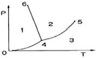
- 점 0
- 점 4
- 점 5
- 점 6
(정답률: 88%)
11. 보일러 굴뚝의 통풍력을 발생시키는 방법이 아닌 것은?
- 연도에서 연소가스와 외부공기의 밀도차에 의해서 생기는 압력차를 이용하는 방법
- 벤튜리 관을 이용하여 배기가스를 흡입하는 방법
- 압입 송풍기를 사용하는 방법
- 흡입 송풍기를 사용하는 방법
(정답률: 75%)
12. 어떤 가역 열기관이 400℃에서 1000kJ을 흡수하여 일을 생간하고 100℃에서 열을 방출한다. 이 과정에서 전체 엔트로피 변화는 약 몇 kJ/K인가?
- 0
- 2.5
- 3.3
- 4
(정답률: 64%)
13. 이상 기체의 단열변화 과정에 대한 식으로 맞는 것은? (단, k는 비열비이다.)
- PV=const
- PkV=const
- PVk=const
- PV1/k=const
(정답률: 81%)
14. -10℃의 얼음 1kg에 일정한 비율로 열을 가할 때 시간과 온도의 관계를 바르게 나타낸 그림은? (단, 압력은 일정하다.)
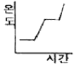
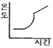
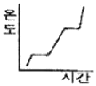
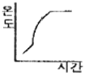
(정답률: 89%)
15. 다음 ()안에 들어갈 내용으로 옳은 것은?
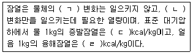
- (ㄱ)상(phase), (ㄴ)온도, (ㄷ)539, (ㄹ)80
- (ㄱ)체적, (ㄴ)상(phase), (ㄷ)739, (ㄹ)90
- (ㄱ)비열, (ㄴ)상(phase), (ㄷ)439, (ㄹ)90
- (ㄱ)온도, (ㄴ)상(phase), (ㄷ)539, (ㄹ)80
(정답률: 83%)
16. 압력이 300kPa, 체적이 0.5m3인 공기가 일정한 압력에서 체적이 0.7m3으로 팽창했다. 이 팽창 중에 내부에너지가 50kJ 증가하였다면, 팽창에 필요한 열량은 몇 kJ인가?
- 50
- 60
- 100
- 110
(정답률: 63%)
17. 기체의 분자량이 2배로 증가하면 기체상수는 어떻게 되는가?
- 2배
- 4배
- 1/2배
- 불변
(정답률: 79%)
18. 연소의 3요소에 해당하지 않는 것은?
- 가연물
- 인화점
- 산소 공급원
- 점화원
(정답률: 85%)
19. 물 1kmol이 100℃, 1기압에서 증발할 때 엔트로피 변화는 몇 kJ/K인가? (단, 물의 기화열은 2257kJ/kg이다.)
- 22.57
- 100
- 109
- 139
(정답률: 68%)
20. 27℃에서 12L의 체적을 갖는 이상기체가 일정압력에서 127℃까지 온도가 상승하였을 때 체적은 약 얼마인가?
- 12L
- 16L
- 27L
- 56L
(정답률: 69%)
2과목: 계측 및 에너지진단
21. 증기 보일러에서 압력계 부착 시 증기가 압력계에 직접 들어가지 않도록 부착하는 장치는?
- 부압관
- 사이폰관
- 맥동댐퍼관
- 플릭시블관
(정답률: 88%)
22. 열 설비에 사용되는 자동제어 계의 동작순서로 옳은 것은?
- 조작-검출-판단(조절)-비교-측정
- 비교-판단(조절)-조작-검출
- 검출-비교-판단(조절)-조작
- 판단-비교(조절)-검출-조작
(정답률: 76%)
23. 오르자트 분석 장치에서 암모니아성 염화 제1동용액으로 측정할 수 있는 것은?
- CO2
- CO
- N2
- O2
(정답률: 64%)
24. 증기부와 수부의 굴절률 차를 이용한 것으로 증기는 적색, 수부는 녹색으로 보이도록 한 것으로 고압의 대용량이나, 발전용 보일러에 사용되는 수면계는?
- 2색식 수면계
- 유리관 수면계
- 평형투시직 수면계
- 평형반사식 수면계
(정답률: 87%)
25. 보일러에서 아래 식은 무엇을 나타내는가? (단, G : 매시간당 증발량(kg/h), Gf : 매시간단 연료소비량(kg/h), Hℓ : 연료의 저위발열량(kcal/kg), i2 : 증기의 엔탈피(kcal/kg), i1 : 급수의 엔탈피(kcal/kg))
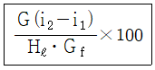
- 보일러 마력
- 보일러 효율
- 상당 증발량
- 연소 효율
(정답률: 78%)
26. 보일러 실제증발량에 증발계수를 곱한 값은?
- 상당 증발량
- 연소실 열부하
- 전열면 열부하
- 단위 시간당 연료 소모량
(정답률: 88%)
27. 액면계에서 액면측정 방식에 대한 분류로 틀린 것은?
- 부자식
- 차압식
- 편위식
- 분동식
(정답률: 66%)
28. 증기 건도를 향상시키기 위한 방법과 관계가 없는 것은?
- 저압의 증기를 고압의 증기로 증압시킨다.
- 증기주관에서 효율적인 드레인 처리를 한다.
- 기수분리기를 설치하여 증기의 건도를 높인다.
- 포밍, 프라이밍 현상을 방지하여 캐리오버현상이 일어나지 않도록 한다.
(정답률: 63%)
29. 정해진 순서에 따라 순차적으로 제어하는 방식은?
- 피드백 제어
- 추종 제어
- 시퀀스 제어
- 프로그램 제어
(정답률: 84%)
30. SI 단위표시에서 압력단위 표시방법으로 옳은 것은?
- mmHg/cm2
- cm2/kg
- kg/at
- N/m2
(정답률: 79%)
31. 다음 중 연소실내의 온도를 측정할 때 가장 적합한 온도계는?
- 알코올 온도계
- 금속 온도계
- 수은 온도계
- 열전대 온도계
(정답률: 88%)
32. 다음 그림과 같은 액주계 설치 상태에서 비중량이 γ, γ1이고 액주 높이차가 h일 때 관로압 Px는 얼마인가?
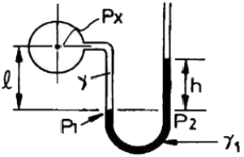
- Px=γ1h+γℓ
- Px=γ1h-γℓ
- Px=γ1ℓ-γh
- Px=γ1ℓ+γh
(정답률: 58%)
33. 공기압 신호 전송에 대한 설명으로서 틀린 것은?
- 조작부의 동특성이 우수하다.
- 제진, 제습 공기를 사용하여야 한다.
- 공기압이 통일되어 있어 취급이 편리하다.
- 전송 거리가 길어도 전송 지연이 발생되지 않는다.
(정답률: 82%)
34. 유체주에 해당하는 압력의 정확한 표현식은? (단, 유체주의 높이 h, 압력 P, 밀도 ρ, 비중량 γ, 중력 가속도 g라 하고, 중력 가속도는 지점에 따라 거의 일정하다고 가정한다.)
- P=hρ
- P=hg
- P=ρgh
- P=γg
(정답률: 84%)
35. 물체의 탄성 변위량을 이용한 압력계가 아닌 것은?
- 다이아프램 압력계
- 경사관식 압력계
- 브르돈관 압력계
- 벨로즈 압력계
(정답률: 86%)
36. 계량 계측기의 교정을 나타내는 말은?
- 지시값과 표준기의 지시값 차이를 계산하는 것
- 지시값과 참값을 일치하도록 수정하는 것
- 지시값과 오차값의 차이를 계산하는 것
- 지시값과 참값의 차이를 계산하는 것
(정답률: 65%)
37. 융커스식 열량계의 특징에 관한 설명으로 틀린 것은?
- 가스의 발열량 측정에 가장 많이 사용된다.
- 열량측정 시 시료가스 온도 및 압력을 측정한다.
- 구성 요소로는 가스 계량기, 압력 조정기, 기압계, 온도계, 저울 등이 있다.
- 열량측정 시 가스 열량계의 배기 온도는 측정하지 않는다.
(정답률: 81%)
38. 2차 지연 요소에 대한 설명으로 옳은 것은?
- 1차 지연 요소 2개를 직렬로 연결한 것으로 1차 지연 요소보다 응답속도가 더 늦어진다.
- 1차 지연 요소 2개를 직렬로 연결한 것으로 1차 지연 요소보다 응답속도가 더 빨라진다.
- 1차 지연 요소 2개를 병렬로 연결한 것으로 1차 지연 요소보다 응답속도가 더 늦어진다.
- 1차 지연 요소 2개를 병렬로 연결한 것으로 1차 지연 요소보다 응답속도가 더 빨라진다.
(정답률: 66%)
39. 보일러 열정산에 있어서 출열 항목이 아닌 것은?
- 불완전 연소 가스에 의한 손실 열량
- 복사열에 의한 손실 열량
- 발생 증기의 흡수 열량
- 공기의 현열에 의한 열량
(정답률: 82%)
40. SI단위계의 기본단위에 해당되지 않는 것은?
- 길이
- 질량
- 압력
- 시간
(정답률: 81%)
3과목: 열설비구조 및 시공
41. 보온재 중 무기질 보온재가 아닌 것은?
- 석면
- 탄산마그네슘
- 규조토
- 펠트
(정답률: 79%)
42. 배관을 아래에서 위로 떠 받쳐 지지하는 장치 중의 하나로 배관의 굽힘부 등에 관으로 영구히 고정시키는 것은?
- 앵커
- 파이프 슈
- 스토퍼
- 가이드
(정답률: 77%)
43. 수관보일러에 대한 설명으로 틀린 것은?
- 수관 내에 흐르는 물을 연소가스로 가열하여 증기를 발생시키는 구조이다.
- 수관에서 나오는 기포를 물과 분리를 위하여 증기드럼이 필요하다.
- 일반적으로 제작비용이 커 대용량 보일러에 적용이 많으나 중소형에도 적용이 가능하다.
- 노통내면 및 동체 수부의 면을 고온가스로 가열하게 되어 비교적 열손실이 적다.
(정답률: 54%)
44. 다음 중 수관보일러는 어느 것인가?
- 관류 보일러
- 케와니 보일러
- 입형 보일러
- 스코치 보일러
(정답률: 78%)
45. 보일러의 종류에서 랭커셔 보일러는 무슨 보일러에 해당하는가?
- 수직 보일러
- 연관 보일러
- 노통 보일러
- 노통연관 보일러
(정답률: 69%)
46. 조업방식에 따른 요의 분류 시 불연속식 요에 해당되지 않는 것은?
- 횡염식 요
- 터널식 요
- 승염식 요
- 도염식 요
(정답률: 81%)
47. 호칭지름 15A의 강관을 반지름 90mm로 90도 각도로 구부릴 때 곡선부의 길이는?
- 130mm
- 141mm
- 182mm
- 280mm
(정답률: 66%)
48. 평로법과 비교하여 LD전로법에 관한 설명으로 틀린 것은?
- 평로법보다 생산 능률이 높다.
- 평로법보다 공장 건설비가 싸다.
- 평로법보다 작업비, 관리비가 싸다.
- 평로법보다 고철의 배합량이 많다.
(정답률: 82%)
49. 수관보일러에서 수관의 배열을 마름모(지그재그)형으로 배열시키는 주된 이유는?
- 연소가스 접촉에 의한 전열을 양호하게 하기 위하여
- 보일러수의 순환을 양호하게 하기 위하여
- 수관의 스케일 형성을 막기 위하여
- 연소가스의 흐름을 원활이 하기 위하여
(정답률: 76%)
50. 보온벽의 온도가 안쪽 20℃, 바깥쪽 0℃이다. 벽 두께가 20cm, 벽 재료의 열전도율이 0.2kcal/mㆍhㆍ℃일 때, 벽 1m2당, 매시간의 열손실량은?
- 0.2kcal/h
- 0.4kcal/h
- 20kcal/h
- 50kcal/h
(정답률: 58%)
51. 다음 보온재 중 안전사용 온도가 가장 높은 것은?
- 석면
- 암면
- 규조토
- 펄라이트
(정답률: 76%)
52. 에너지이용 합리화법에 따른 보일러 제조검사에 해당되는 것은?
- 용접검사
- 설치검사
- 개조검사
- 설치장소 변경검사
(정답률: 82%)
53. 증기난방 배관용으로 쓰이는 증기트랩에 관한 설명으로 옳은 것은?
- 방열기의 송수구 또는 배관의 윗부분에 증기가 모이는 곳에 설치한다.
- 증기트랩을 설치하는 주목적은 고압의 증기와 공기를 배출하는 것이다.
- 방열기나 증기관 속에 생긴 응축수를 환수관으로 배출한다.
- 증기트랩은 마찰 저항이 커야 하며 내마모성 및 내식성 등이 작아야 한다.
(정답률: 64%)
54. 12m의 높이에 0.1m3/s의 물을 퍼 올리는데 필요한 펌프의 축 마력은?(단, 효율은 80% 이다)
- 15PS
- 20PS
- 30PS
- 38PS
(정답률: 61%)
55. 돌로마이트(dolomite)의 주요 화학성분은?
- SiO2
- SiO2, Al2O3
- CaCO3, MgCO3
- Al2O3
(정답률: 75%)
56. 에너지이용 합리화법에 의한 검사대상기기 조종자의 선임, 해임 또는 퇴직에 관한 신고는 신고 사유가 발생한 날부터 며칠 이내에 해야 하는가?
- 15일
- 30일
- 20일
- 2개월
(정답률: 53%)
57. 증기과열기의 종류를 열가스의 흐름 방향에 따라 분류할 때 해당되지 않는 것은?
- 병류형
- 직류형
- 향류형
- 혼류형
(정답률: 62%)
58. 그림과 같은 고체 벽면에 의하여 열이 전달될 때 전달 열량을 계산하는 식은? (단, λ : 열전도율, S : 전열면적, τ : 시간, δ : 두께이다.)
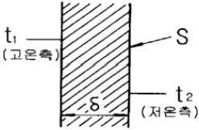
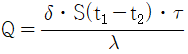
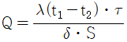
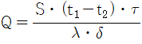
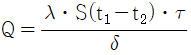
(정답률: 64%)
59. 보일러수 중 알칼리 용액의 농도가 높을 때 응력이 큰 금속표면에 미세한 균열이 일어나는 거을 무엇이라고 하는가?
- 피팅(pitting)
- 가성취화
- 그루빙(grooving)
- 포밍(foaming)
(정답률: 81%)
60. 재생식 공기 예열기로서 일반 대형 보일러에 주로 사용되는 것은?
- 엘레멘트 조립식
- 융그스트룸식
- 판형식
- 관형식
(정답률: 83%)
4과목: 열설비취급 및 안전관리
61. 보일러의 건식 보존법에서 보일러 내부에 넣어두는 건조 약품으로 가장 적합한 것은?
- 탄산칼슘
- 실리카겔
- 염화나트륨
- 염화수소
(정답률: 81%)
62. 건식 환수관에서 증기관 내의 응축수를 환수관에 배출할 때는 응축수가 체류하기 쉬운 곳에 무엇을 설치하여야 하는가?
- 안전 밸브
- 드레인 포켓
- 릴리프 밸브
- 공기빼기 밸브
(정답률: 81%)
63. 스프링식 안전밸브에 속하지 않는 것은?
- 전량식 안전밸브
- 고양정식 안전밸브
- 전양정식 안전밸브
- 기체용식 안전밸브
(정답률: 74%)
64. 송수주관을 상향구배로 하고 방열면을 보일러 설치 기준면보다 높게 하여 온수를 순환시키는 배관방식은?
- 단관식
- 복관식
- 상향순환식
- 하향순환식
(정답률: 85%)
65. 보일러의 급수처리에 있어서 용해 고형물(경도성분)을 침전시켜 연화할 목적으로 사용되는 약제는?
- H2SO4
- NaOH
- Na2CO3
- MgCl2
(정답률: 53%)
66. 보일러 운전 중 취급상의 사고에 해당되지 않는 것은?
- 압력초과
- 저수위 사고
- 급수처리 불량
- 부속장치 미비
(정답률: 86%)
67. 보일러에 사용되는 탈산소제의 종류로 옳은 것은?
- 황산
- 염화나트륨
- 하이드라진
- 수산화나트륨
(정답률: 69%)
68. 에너지이용 합리화법에서 검사대상기기조종자의 선임ㆍ해임 또는 퇴직신고의 접수는 누구에게 하는가?
- 국토교통부장관
- 환경부장관
- 한국에너지공단이사장
- 한국열관리시공협회장
(정답률: 88%)
69. 보일러 안전밸브의 작동시험 방법으로 틀린 것은?
- 안전밸브갸 2개 이상인 경우 그 중 1개는 최고사용압력이하, 기타는 최고사용압력의 1.3배 이하이어야 한다.
- 과열기의 안전밸브 분출압력은 증발부 안전밸브의 분출압력 이하이어야 한다.
- 안전밸브가 1개인 경우 분출압력은 최고사용압력 이하이어야 한다.
- 제열기 및 독립과열기에 있어서는 안전밸브가 1개인 경우 분출압력은 최고사용압력 이하이어야 한다.
(정답률: 75%)
70. 다음 중 보일러 수의 슬러지 조정제로 사용되는 청관제는?
- 전분
- 가성소다
- 탄산소다
- 아황산소다
(정답률: 67%)
71. 에너지이용 합리화법에 따른 개조검사에 해당되지 않는 것은?
- 온수보일러를 증기보일러로 개조
- 보일러 섹션의 증감에 의한 용량의 변경
- 연료 또는 연소 방법의 변경
- 철금속가열로로서 산업통상자원 부장관이 정하여 고시하는 경우의 수리
(정답률: 74%)
72. 에너지이용 합리화법에 따라 검사대상기기 조종자는 중ㆍ대형보일러 조종자 교육 과정이나 소형보일러ㆍ압력용기 조종자 교육과정을 받아야 하는데, 여기서 중ㆍ대형 보일러 조종자 교육 과정을 받아야 하는 기준으로 옳은 것은?
- 검사대상기기 조종자 중 용량이 1t/h(난방용의 경우에는 5t/h)를 초과하는 강철제 보일러 및 주철제 보일러의 조종자
- 검사대상기기 조종자 중 용량이 3t/h(난방용의 경우에는 5t/h)를 초과하는 강철제 보일러 및 주철제 보일러의 조종자
- 검사대상기기 조종자 중 용량이 1t/h(난방용의 경우에는 10t/h)를 초과하는 강철제 보일러 및 주철제 보일러의 조종자
- 검사대상기기 조종자 중 용량이 3t/h(난방용의 경우에는 10t/h)를 초과하는 강철제 보일러 및 주철제 보일러의 조종자
(정답률: 68%)
73. 열역학적 트랩으로 수격현상에 강하고 과열증기에도 사용할 수 있으며 구조가 간단하며 유지보수가 용이한 증기트랩은?
- 버킷 트랩
- 디스크 트랩
- 벨로즈 트랩
- 바이메탈식 트랩
(정답률: 73%)
74. 사무실에서 증기난방을 할 때 필요한 전체 방열량이 20000kcal/h 이라면 5세주 650mm 주철제 방열기로 난방을 할 때 필요한 방열기의 쪽수는? (단, 5세주 650mm 주절체 방열관의 쪽당 방열면적은 0.26m2이다.)
- 119쪽
- 129쪽
- 139쪽
- 150쪽
(정답률: 62%)
75. 보일러에서 증기를 송기할 때의 조작방법으로 틀린 것은?
- 증기헤더의 드레인 밸브를 열어 응축수를 배출한다.
- 주중기관 내에 관을 따뜻하게 하기 위해 다량의 증기를 급격히 보낸다.
- 주증기 밸브의 열림 정도를 단계적으로 한다.
- 주증기 밸브를 완전히 연 다음 약간 되돌려 놓는다.
(정답률: 88%)
76. 에너지이용 합리화법에 관한 내용으로 다음 ()안에 각각 들어갈 용어로 옳은 것은?
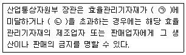
- ㉠ 최대소비효율기준 ㉡ 최저사용량기준
- ㉠ 적정소비효율기준 ㉡ 적정사용량기준
- ㉠ 최저소비효율기준 ㉡ 최대사용량기준
- ㉠ 최대사용량기준 ㉡ 최저소비효율기준
(정답률: 83%)
77. 하트포드 배관에서 환수주관과 균형관(balance pope)의 연결 위치는 보일러 사용수위(표준수위)에서 몇 mm 아래 위치하는가?
- 30
- 50
- 70
- 100
(정답률: 81%)
78. 증기의 순환이 가장 빠르며 방열기 설치장소에 제한을 받지 않는 환수방식으로 증기와 응축수를 진공펌프로 흡입 순환시키는 난방법은?
- 중력환수식
- 기계환수식
- 진공환수식
- 자연환수식
(정답률: 88%)
79. 에너지이용 합리화법에 따라 국내외 에너지사정의 변동으로 에너지수급에 중대한 차질이 발생하거나 우려가 있다고 인정될 경우, 에너지수급의 안정을 위한 조치 사항에 해당되지 않는 것은?
- 에너지의 배급
- 에너지의 비축과 저장
- 에너지 판매시설의 확충
- 에너지사용기자재의 사용 제한
(정답률: 82%)
80. 다음 중 보일러의 보존방법이 아닌 것은?
- 건식보존법
- 소다 보일링법
- 만수보존법
- 질소봉입법
(정답률: 81%)
먼저, 피스톤 위에 올려진 추의 무게는 실린더 내부의 가스에 의해 상쇄된다고 가정할 수 있다. 따라서, 실린더 내부의 가스와 추의 무게는 서로 균형을 이루고 있다.
그리고, 가스의 부피는 일정하므로, 가스의 상태방정식을 이용하여 압력을 구할 수 있다. 상태방정식은 다음과 같다.
P * V = n * R * T
여기서, P는 압력, V는 부피, n은 몰수, R은 기체상수, T는 절대온도를 나타낸다.
이 문제에서는 부피가 일정하므로, 다음과 같이 식을 변형할 수 있다.
P = (m * g) / (A * n * R)
여기서, m은 추의 질량, g는 중력가속도, A는 실린더의 단면적을 나타낸다.
따라서, 문제에서 주어진 값들을 대입하면 다음과 같다.
P = (100 kg * 9.8 m/s^2) / (pi * (0.⑤ m)^2 * 1 mol * 8.31 J/mol*K)
계산을 하면, P = 601 kPa가 된다. 따라서, 정답은 "601"이다.